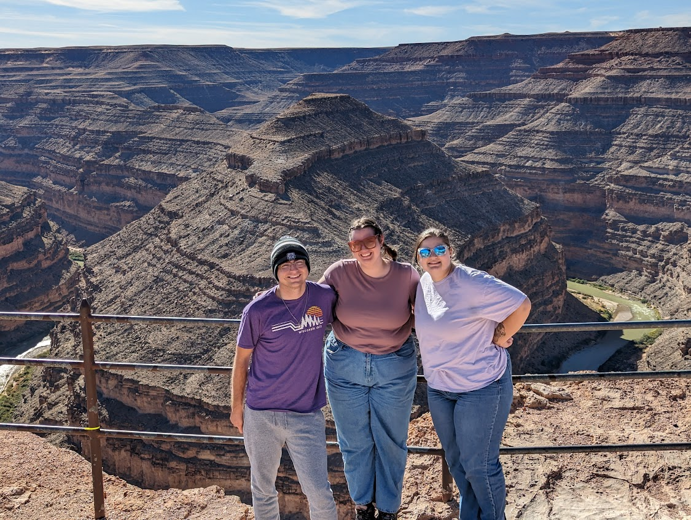
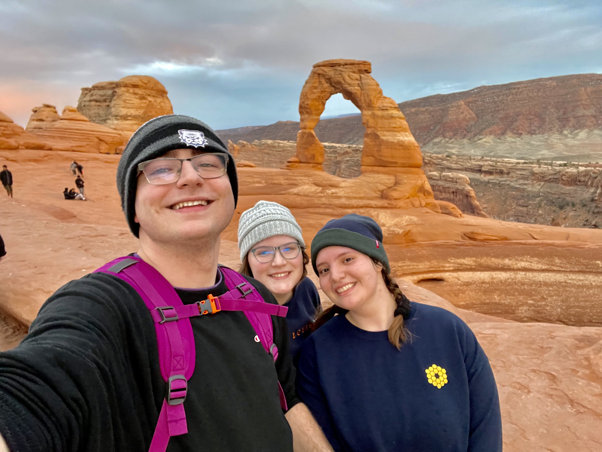
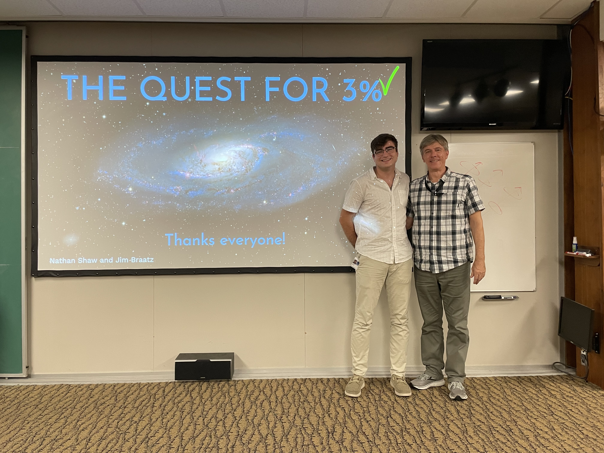
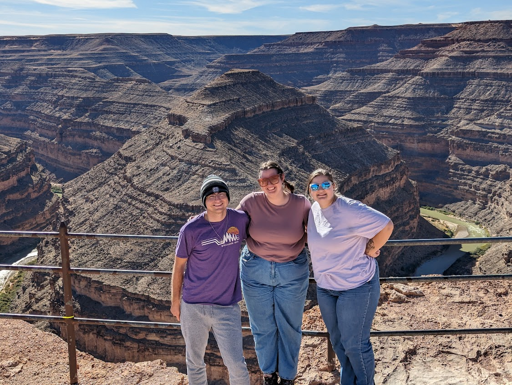
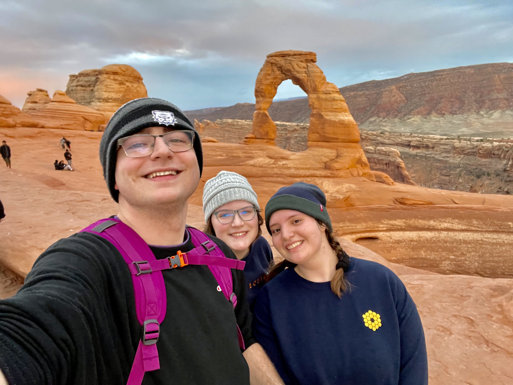
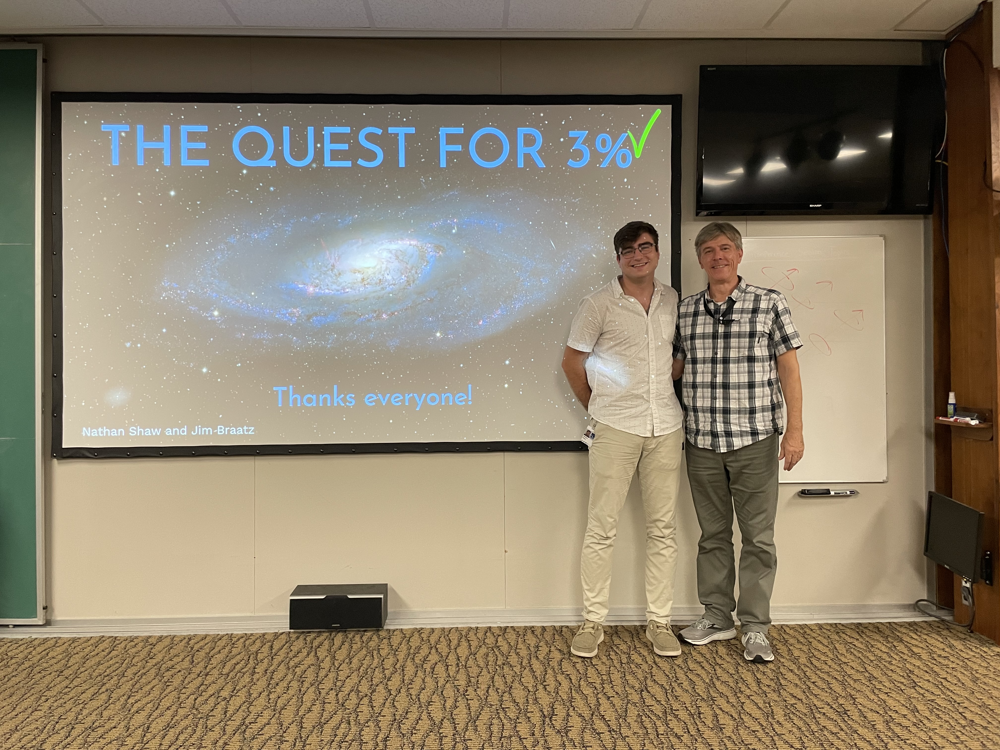
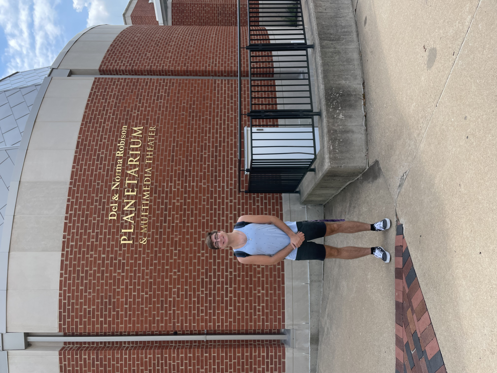
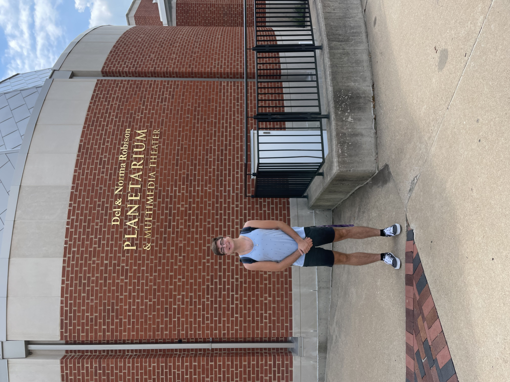

NATHAN C SHAW
 





I have organized and participated in regular stargazing events at various locations, including Truman State Campus, Truman State Observatory, Thousand Hills State Park, and the Adair County Public Library (roughly 10-15 per semester). During my summer REU at the National Radio Astronomy Observatory, I also engaged in public observing nights at McCormick Observatory. At these events, I was responsible for operating telescopes such as the Unistellar eV-Scopes, 17-inch CDK Planewave, Meade, and Dobsonian telescopes. I enjoyed sharing insights about the diverse range of celestial objects we observed, including nebulae, Messier objects, galaxies, and other astronomical phenomena.
I began working at the Del and Norma Robison Planetarium in Fall 2023, starting as a volunteer to develop a live Night Sky Constellation Tour show (DESTINATION: The Skies Above Us). Following that semester, I continued working at the planetarium, creating a live Eclipse Show (DESTINATION: Eclipses) in celebration of the April 2024 total solar eclipse. Currently, I’m developing two new shows focused on the Hubble Tension and one on the Voyager Missions, exploring exciting topics in modern astronomy. Beyond show creation, I am the primary staff member for special events, including elementary school field trips, private showings, and prospective student visits. Working at the planetarium has been incredibly fulfilling, giving me the opportunity to share my passion for science communication with the public, and has become one of the most rewarding experiences of my college career. During my summer REU at NRAO, I collaborated closely with the University of Virginia Astronomy Outreach group and participated in the Dark Skies, Bright Kids program. Through this program, we brought an inflatable planetarium to schools, sharing our knowledge with local communities to inspire the next generation of young minds.
 

As an active member of the Society of Physics Students (SPS), I’ve participated in numerous outreach events designed to make science accessible and engaging for the community. In SPS, I tutor introductory physics students weekly, helping them develop foundational skills and confidence in their studies. I also assist with our annual Science Olympiad event, where I write and administer exams in subjects such as middle and high school astronomy, meteorology, and Fermi questions. Last spring, I organized a *Girl Scout Space Science Badge* event from start to finish, creating an interactive experience that included stargazing, crafting planispheres, a scale-model solar system walk, discussions on light pollution, and lessons on fundamental astronomy concepts. The event was a tremendous success, with parents sharing it with other local troops, and the troop leader noting it was the most engaged she had ever seen the scouts. A parent even recognized me in public to express gratitude for how impactful the event was on their child. This experience was incredibly rewarding, and I’m excited to organize it again this year as we continue to inspire young minds in science.
In preparation for the 2024 Total Solar Eclipse, I spent the six weeks leading up to the event tabling around campus and throughout Kirksville to raise awareness and sell affordable eclipse glasses, with proceeds supporting the Truman State Astronomy Department. At these events, we set up solar telescopes, allowing the public to observe sunspots and engage in hands-on learning about the Sun. I also participated in a local interview on KTVO in Kirksville, where I discussed what to expect during the eclipse, emphasized safe viewing practices, and shared tips on using eclipse glasses to protect eyesight.